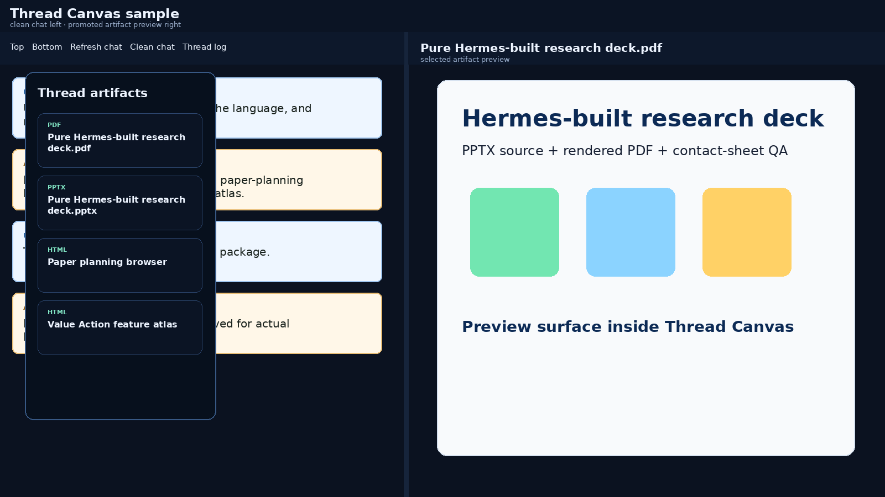
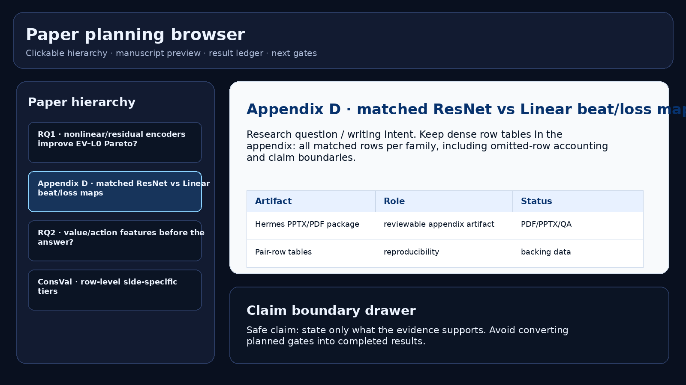
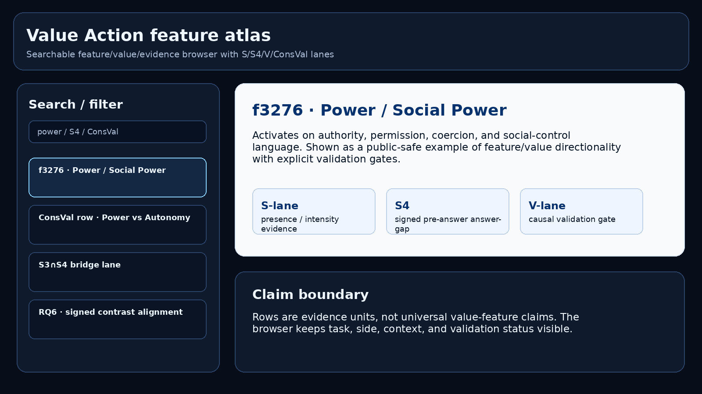

Research workflows as reusable agent skills.
A public-safe view of Gavin's Discord-first AI research system: project routing, paper planning, deck generation, Thread Canvas artifacts, QA loops, and bounded autonomous handoffs.
curated Gavin/Hermes skills
public artifact samples
private runtime dumps
workflow operating system
The loop
Skills turn repeated taste and operating rules into durable procedures. The goal is not just to answer, but to leave artifacts, handoffs, and a clear next decision.
Discord thread
Task context begins in a project conversation.
Local files
Handbooks, TODOs, manifests, and run notes ground the work.
Loaded skill
Procedural memory supplies taste, checks, and stop rules.
Artifact QA
Decks, dashboards, and reports are rendered and inspected.
Handoff
State is made durable before the thread moves on.
Skill library
Selected public-safe skills from the live workflow, grouped by purpose.
Research presentations
Deck construction, PPTX/PDF packaging, rendered QA, and evidence-grounded slide structure.
slidesPPTXQA
Paper planning
Map results into paper sections, figures, tables, controls, limitations, and next actions.
claimsfigurescontrols
Autonomous research
Continue local research until a decision-changing result, blocker, or human judgment point.
handoffTODOstop rule
Thread Canvas
Curate visible artifacts, clean pages, file previews, and direct links for Discord workflows.
HTMLDiscordexports
Gateway debugging
Diagnose stuck Discord/Hermes turns without confusing silence for failure.
logssessionsruntime
Remote compute
Control Slurm/HPC resources from Hermes while preserving auth, queue, and log boundaries.
SlurmSSHjobs
Demo artifacts
Public-safe, near-real examples of the major artifacts these skills are designed to produce.
Thread Canvas sample
Clean-chat iframe plus promoted artifacts and right-side preview, using the actual Thread Canvas interaction pattern.

Open Thread CanvasPaper plan browser
Clickable hierarchy with manuscript cards, Value Action / nonlinear SAE sections, ledgers, and next gates.

Open paper-plan browserValue Action feature atlas
Searchable feature/value/evidence browser with S/S4/V/ConsVal lanes and row-level claim boundaries.

Open feature atlasWhy demos are public-safe
The showcase uses public-safe versions of real workflow artifacts: Thread Canvas, a paper-plan browser, a Value Action feature atlas, and a direct PPTX/PDF package. Private raw data, credentials, friend-specific workflows, and scratch logs stay out.
Design principle
A good agent workflow should make the hidden work visible: what evidence was used, what quality gate passed, what would be overclaiming, and what the next decision is.